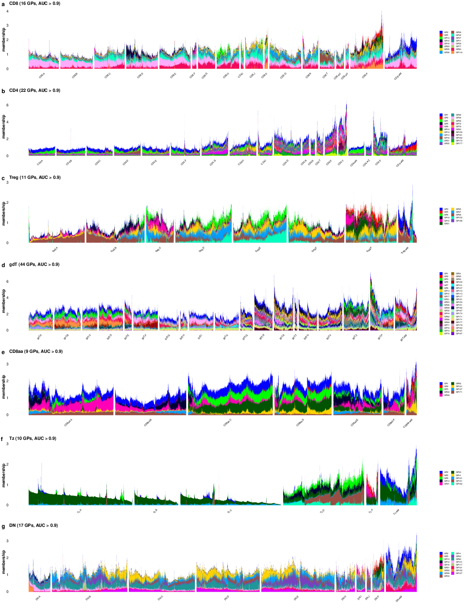

Last updated: 2026-09-09
Checks: 7 0
Knit directory:
immgenT-GP-analysis/analysis/
This reproducible R Markdown analysis was created with workflowr (version 1.7.2). The Checks tab describes the reproducibility checks that were applied when the results were created. The Past versions tab lists the development history.
Great! Since the R Markdown file has been committed to the Git repository, you know the exact version of the code that produced these results.
Great job! The global environment was empty. Objects defined in the global environment can affect the analysis in your R Markdown file in unknown ways. For reproduciblity it’s best to always run the code in an empty environment.
The command set.seed(1) was run prior to running the
code in the R Markdown file. Setting a seed ensures that any results
that rely on randomness, e.g. subsampling or permutations, are
reproducible.
Great job! Recording the operating system, R version, and package versions is critical for reproducibility.
Nice! There were no cached chunks for this analysis, so you can be confident that you successfully produced the results during this run.
Great job! Using relative paths to the files within your workflowr project makes it easier to run your code on other machines.
Great! You are using Git for version control. Tracking code development and connecting the code version to the results is critical for reproducibility.
The results in this page were generated with repository version 0e84840. See the Past versions tab to see a history of the changes made to the R Markdown and HTML files.
Note that you need to be careful to ensure that all relevant files for
the analysis have been committed to Git prior to generating the results
(you can use wflow_publish or
wflow_git_commit). workflowr only checks the R Markdown
file, but you know if there are other scripts or data files that it
depends on. Below is the status of the Git repository when the results
were generated:
Ignored files:
Ignored: .DS_Store
Ignored: .claude/
Ignored: analysis/.DS_Store
Ignored: analysis/.Rhistory
Ignored: analysis/assets/.DS_Store
Ignored: captions/
Ignored: code/.DS_Store
Ignored: code/other/topic_flashier_20250212.R
Ignored: code/other/topic_wrapper_20250215_alldata_backfit.sh
Ignored: data
Ignored: experiments/
Ignored: figures/.DS_Store
Ignored: figures/Previous/.DS_Store
Ignored: figures/Previous/bits/.DS_Store
Ignored: figures/Previous/bits/Figure 1/.DS_Store
Ignored: figures/Previous/bits/Figure 2/.DS_Store
Ignored: figures/Previous/bits/Figure 3/.DS_Store
Ignored: figures/Previous/bits/Figure 4/.DS_Store
Ignored: figures/Previous/bits/Figure 6/.DS_Store
Ignored: figures/Previous/bits/Figure 7/.DS_Store
Ignored: figures/Previous/bits/Figure S1/.DS_Store
Ignored: figures/Previous/bits/Figure S2/.DS_Store
Ignored: figures/Previous/bits/Figure S3/.DS_Store
Ignored: figures/Previous/bits/Figure S6/.DS_Store
Ignored: figures/Previous/bits/Figure S7/.DS_Store
Ignored: figures/final-selected/.DS_Store
Ignored: figures/final-selected/Figure 1/.DS_Store
Ignored: figures/final-selected/Figure 2/.DS_Store
Ignored: figures/final-selected/Figure 4/.DS_Store
Ignored: figures/final-selected/Figure S1/.DS_Store
Ignored: figures/templates_20260729/
Ignored: internal/
Ignored: log/
Ignored: output/.DS_Store
Ignored: output/Figure2/
Ignored: output/Figure7b/7b_cell_metadata.csv.gz
Ignored: plan/
Ignored: tables/
Ignored: tmp/
Note that any generated files, e.g. HTML, png, CSS, etc., are not included in this status report because it is ok for generated content to have uncommitted changes.
These are the previous versions of the repository in which changes were
made to the R Markdown (analysis/FigureS6.Rmd) and HTML
(docs/FigureS6.html) files. If you’ve configured a remote
Git repository (see ?wflow_git_remote), click on the
hyperlinks in the table below to view the files as they were in that
past version.
| File | Version | Author | Date | Message |
|---|---|---|---|---|
| Rmd | c233cd8 | Ziang Zhang | 2026-09-09 | Extended Data reorganisation: split the tissue/cluster figure, renumber 3-8 |
| html | 796eeba | Ziang Zhang | 2026-09-04 | Build site: the three corrected captions |
| Rmd | 2344a4a | Ziang Zhang | 2026-09-04 | Three captions corrected where the published text and the panel disagree |
| html | 1e88d7e | Ziang Zhang | 2026-09-04 | Build site: published captions and titles across all 24 pages |
| Rmd | 0267e5b | Ziang Zhang | 2026-09-04 | Captions from the published manuscript; trim editor notes off the page code |
| html | 19c977f | Ziang Zhang | 2026-09-02 | Build site: Extended Data 5-7 renumbered, Figure S5 page rebuilt |
| Rmd | 1e5721a | Ziang Zhang | 2026-09-02 | Extended Data 5-7 renumbered, and Figure S5 assembled as one stacked figure |
| html | eeca07b | Ziang Zhang | 2026-08-05 | Keep pre-refactor provenance in panel comments off the published pages |
| Rmd | 5651d0e | Ziang Zhang | 2026-08-05 | Extended Data tables: reorder to six, rebuild Table 1, drop internal notes |
| html | cbcec52 | Ziang Zhang | 2026-07-30 | Build site: Extended Data Figure naming |
| Rmd | 66aa029 | Ziang Zhang | 2026-07-30 | Name the Extended Data figures as published on the site |
| html | ac650a0 | Ziang Zhang | 2026-07-30 | Build site: Figure S5 (ex-S6a) and Figure S6 as a-f |
| Rmd | c9b020f | Ziang Zhang | 2026-07-30 | Split Figure S6’s protein-program heatmap out as Figure S5 |
| html | 732ac8d | Ziang Zhang | 2026-07-29 | Build site: caption alignment with captions_20260729_final.docx |
| Rmd | 8d73953 | Ziang Zhang | 2026-07-28 | Align captions with captions_20260729_final.docx |
| html | ae21d37 | Ziang Zhang | 2026-07-28 | Build site: republish after the reorder commits |
| html | d538aa2 | Ziang Zhang | 2026-07-28 | Build site: reordered Figures 6 / S6 / S3 and the new Figure 7b page |
| Rmd | 4c07670 | Ziang Zhang | 2026-07-28 | Reorder Figures 6, S6 and S3; make the ex-S5 figure Figure 7b |
| html | 029b0ae | Ziang Zhang | 2026-07-28 | Build site. |
| Rmd | 0f5b5da | Ziang Zhang | 2026-07-28 | Align all figure captions with captions_20260728_final.docx |
| html | 7fb2ab0 | Ziang Zhang | 2026-07-28 | Build site: FigureS6 gallery code shows the verified-install write |
| html | f781754 | Ziang Zhang | 2026-07-28 | Build site: FigureS6 caption on omitted unthresholded markers |
| Rmd | aeb91c8 | Ziang Zhang | 2026-07-28 | Panel titles list only the markers the gate actually applied |
| html | 3d96bb2 | Ziang Zhang | 2026-07-28 | Build site: FigureS6 header note on the curated threshold file |
| html | 3fc3789 | Ziang Zhang | 2026-07-27 | Republish all 24 pages |
| html | 1390a03 | Ziang Zhang | 2026-07-27 | Republish all 24 pages |
| html | adaef21 | Ziang Zhang | 2026-07-27 | Build site: panel fixes and PDF-derived assets |
| html | 5b19858 | Ziang Zhang | 2026-07-27 | Build site. |
| Rmd | 91ee059 | Ziang Zhang | 2026-07-26 | Select each panel’s code block by name, not by line number |
| html | 91ee059 | Ziang Zhang | 2026-07-26 | Select each panel’s code block by name, not by line number |
| html | 92021bf | Ziang Zhang | 2026-07-02 | Build site. |
| Rmd | db7a5cd | Ziang Zhang | 2026-07-02 | Recover 3 data-provenance gaps into pipeline scripts |
| html | 827c89b | Ziang Zhang | 2026-07-02 | Build site. |
| Rmd | 8ac7f9f | Ziang Zhang | 2026-07-02 | Add data provenance notes to each script; remove conversational |
| Rmd | f9db962 | Ziang Zhang | 2026-07-02 | Simplify layout: drop old code/script folders, rename |
| html | c6e5086 | Ziang Zhang | 2026-07-02 | Build site. |
| html | 5a79883 | Ziang Zhang | 2026-07-02 | Build site. |
| Rmd | 2b0e445 | Ziang Zhang | 2026-07-02 | Fix GitHub source links to point at the new |
| html | cf1d0ac | Ziang Zhang | 2026-07-02 | Build site. |
| Rmd | 06b2461 | Ziang Zhang | 2026-07-02 | Initial commit: immgenT-GP-analysis |
| html | 06b2461 | Ziang Zhang | 2026-07-02 | Initial commit: immgenT-GP-analysis |
This figure is one stacked panel – seven wide rows, one per T cell
lineage – produced by script/FigureS6.R,
which assembles the rows itself, so the figure on disk is always the one
the script last drew. It is the per-cluster, all-GP counterpart of Fig. 3b, which shows six hand-picked
lineage-defining GPs grouped by lineage: here every GP that marks a
sub-lineage cluster is shown, and cells are grouped by cluster within
each lineage. The GPs are selected from the cluster AUCs published as Extended Data Table 6, and script/verify_structure_plot_gps.R
re-derives every row’s GP set from that published table, failing if it
disagrees with the figure or with the caption below. The code is shown
for reference (not re-executed on this page, since it loads the full
cell-by-GP loading matrix); the image is its pre-rendered output.
library(ggplot2)
library(ggrastr)
library(cowplot)
library(fastTopics) # structure_plot()
if (!file.exists("code/R/structure_plot_panels.R")) {
stop("Run this script from the immgenT-GP-analysis repository root.")
}
source("code/R/structure_plot_panels.R")
data_path <- "data/"
figure_path <- "figures/final-selected/Figure S6/"
record_path <- "output/FigureS6/"
dir.create(figure_path, recursive = TRUE, showWarnings = FALSE)
dir.create(record_path, recursive = TRUE, showWarnings = FALSE)
# Record when this run started, to assert at the end that the figure is newer.
run_started_at <- Sys.time()The row map, the AUC threshold, the display filters and the assembled
geometry live in code/R/structure_plot_panels.R, which the
verification script reads as well, so the figure and the check cannot
disagree about what is shown:
# Row letter per lineage, in stacking order -- the level-1 lineage order of
# Figure 1D and Figure 3, with thymocytes and DP cells excluded as they are
# there. The letters are the panel labels cowplot::plot_grid() draws on the
# assembled figure. Both consumers iterate over the names of this map, so a
# lineage cannot be drawn, or checked, under another lineage's letter.
structure_plot_panels <- c(
"CD8" = "a",
"CD4" = "b",
"Treg" = "c",
"gdT" = "d",
"CD8aa" = "e",
"Tz" = "f",
"DN" = "g"
)
# A GP is shown in a lineage's panel when its one-vs-rest AUC for predicting
# membership in at least one of that lineage's annotation_level2 clusters
# exceeds this threshold. Those AUCs are the values published as Extended Data
# Table 6 -- script/ExtendedDataTable6_GP_AUC_cluster.R reads the same file --
# which is what makes the two checkable against each other.
structure_plot_auc_threshold <- 0.9
# Display filters. These apply to the plotted cells only, never to the
# AUC-based GP selection above, which always uses every cluster of the lineage.
structure_plot_min_cluster_cells <- 100 # smaller clusters are not drawn
structure_plot_max_cells_per_cluster <- 2000 # larger clusters are subsampled
# Assembled geometry: each row is drawn wide and short, and the seven are
# stacked into one figure. A row carries up to 21 cluster blocks and their
# labels, so it needs the width; the height then follows from keeping seven
# rows on one page.
structure_plot_width <- 16 # inches, the whole figure
structure_plot_row_height <- 3 # inches per lineage row# ============================================================
# GP selection
# ============================================================
# Which lineage each cluster belongs to, from the metadata.
cluster_lineage <- cluster_lineage_map(level2_all, level1_all)
auc_clusters <- rownames(auc_level2)
prefix_lineage <- sub("[.].*$", "", auc_clusters)
if (!identical(unname(cluster_lineage[auc_clusters]), prefix_lineage)) {
disagree <- auc_clusters[unname(cluster_lineage[auc_clusters]) != prefix_lineage]
stop(sprintf(
"cluster name prefixes disagree with annotation_level1 for: %s",
paste(disagree, collapse = ", ")
))
}
# One GP set per row. Each row's palette is then assigned inside the loop
# below, independently of the other rows -- see structure_plot_row_colors().
panel_gps <- gps_above_auc_by_lineage(auc_level2, cluster_lineage)
message(sprintf(
"%d GPs over %d rows (AUC > %.1f): %s",
length(unique(unlist(panel_gps, use.names = FALSE))), length(panel_gps),
structure_plot_auc_threshold,
paste(sprintf("%s %d", names(panel_gps), lengths(panel_gps)), collapse = ", ")
))# ============================================================
# s6: per-lineage rows, stacked into one figure
# ============================================================
# The loop iterates over the names of the row map, so a lineage cannot be drawn
# under another lineage's letter. Each row is kept as a ggplot and the rows are
# assembled below, rather than saved one file per lineage.
lineage_plots <- list()
cluster_records <- list()
gp_records <- list()
for (lineage in names(structure_plot_panels)) {
panel <- structure_plot_panels[[lineage]]
gps_lineage <- panel_gps[[lineage]]
lineage_cells <- healthy_non_thymocyte[level1_all[healthy_non_thymocyte] == lineage]
cluster_size <- table(droplevels(factor(level2_all[lineage_cells])))
small_clusters <- names(cluster_size)[cluster_size < structure_plot_min_cluster_cells]
lineage_cells <- lineage_cells[!level2_all[lineage_cells] %in% small_clusters]
# Cap each cluster's width so one large cluster cannot crowd out the rest.
set.seed(1234)
keep <- unlist(lapply(
split(seq_along(lineage_cells), level2_all[lineage_cells]),
function(idx) {
if (length(idx) > structure_plot_max_cells_per_cluster) {
sample(idx, structure_plot_max_cells_per_cluster)
} else {
idx
}
}
))
lineage_cells <- lineage_cells[keep]
fit_lineage <- L_pm_filtered[lineage_cells, gps_lineage, drop = FALSE]
grouping_lineage <- factor(level2_all[lineage_cells])
# This row's colors, assigned from the top of the palette without reference to
# any other row. structure_plot_row_colors() returns them in ascending GP
# order, which is the column order here.
colors_lineage <- structure_plot_row_colors(gps_lineage)
if (!identical(names(colors_lineage), colnames(fit_lineage))) {
stop(sprintf("panel %s: palette order does not match its GP columns.", panel))
}
set.seed(1234)
p <- structure_plot(
fit_lineage,
topics = gps_lineage,
gap = 40,
n = 10000,
colors = colors_lineage,
grouping = grouping_lineage,
ggplot_call = rasterized_structure_plot_call
) +
labs(
y = "membership",
color = "",
fill = "",
title = sprintf(
"%s (%d GPs, AUC > %.1f)",
lineage,
length(gps_lineage),
structure_plot_auc_threshold
)
) +
guides(
fill = guide_legend(ncol = 2),
color = guide_legend(ncol = 2)
) +
theme(
plot.title = element_text(size = 11, face = "bold"),
axis.text.x = element_text(size = 6, angle = 45, hjust = 1),
axis.text.y = element_text(size = 9),
axis.title = element_text(size = 10, face = "bold"),
legend.position = "right",
legend.key.size = unit(0.25, "cm"),
legend.text = element_text(size = 5),
legend.spacing.y = unit(0.02, "cm")
)
lineage_plots[[lineage]] <- p
# What this row used, for the alignment check. Every cluster of the lineage
# is listed, drawn or not: the GP selection above uses all of them.
lineage_clusters <- sort(auc_clusters[prefix_lineage == lineage])
drawn_size <- table(droplevels(factor(level2_all[lineage_cells])))
cluster_records[[lineage]] <- data.frame(
panel = panel,
lineage = lineage,
cluster = lineage_clusters,
n_cells_healthy = as.integer(cluster_size[lineage_clusters]),
n_cells_drawn = as.integer(ifelse(
lineage_clusters %in% names(drawn_size),
drawn_size[lineage_clusters],
0L
)),
stringsAsFactors = FALSE
)
gp_records[[lineage]] <- data.frame(
panel = panel,
lineage = lineage,
gp = gps_lineage,
color = unname(colors_lineage),
max_auc_in_lineage = unname(apply(
auc_level2[lineage_clusters, gps_lineage, drop = FALSE], 2,
max, na.rm = TRUE
)),
stringsAsFactors = FALSE
)
}
# Rows are stacked in the map's order and labelled a-g. align = "v" equalises
# everything outside the plotting panel -- y-axis labels and the per-row legends,
# which differ in width because the rows show 9 to 44 GPs -- so the cluster
# blocks line up down the figure instead of each row starting at its own x.
p_s6 <- cowplot::plot_grid(
plotlist = lineage_plots[names(structure_plot_panels)],
nrow = length(structure_plot_panels),
align = "v",
labels = "auto",
label_size = 14
)
ggsave(
filename = paste0(figure_path, "s6.pdf"),
plot = p_s6,
width = structure_plot_width,
height = structure_plot_row_height * length(structure_plot_panels),
dpi = 300,
limitsize = FALSE
)
Extended Data Fig. 6a-g. Structure plots showing single-cell GP activity across major clusters of baseline non-thymocyte (a) CD8, (b) CD4, (c) Treg, (d) gdT, (e) CD8aa, (f) Tz, and (g) DN cells, focusing on GPs with cluster-specific AUC > 0.9.
The GP sets, the palette, and the clusters each row drew or omitted
are written out alongside the figure, which is what script/verify_structure_plot_gps.R
compares against Extended Data Table
6 and against the caption above:
# ============================================================
# What each panel drew, for the alignment check
# ============================================================
cluster_record <- do.call(rbind, cluster_records)
cluster_record$n_cells_healthy[is.na(cluster_record$n_cells_healthy)] <- 0L
write.csv(
cluster_record,
paste0(record_path, "s6_panel_clusters.csv"),
row.names = FALSE
)
write.csv(
do.call(rbind, gp_records),
paste0(record_path, "s6_panel_gps.csv"),
row.names = FALSE
)
sessionInfo()R version 4.5.1 (2025-06-13)
Platform: aarch64-apple-darwin20
Running under: macOS Sequoia 15.6.1
Matrix products: default
BLAS: /System/Library/Frameworks/Accelerate.framework/Versions/A/Frameworks/vecLib.framework/Versions/A/libBLAS.dylib
LAPACK: /Library/Frameworks/R.framework/Versions/4.5-arm64/Resources/lib/libRlapack.dylib; LAPACK version 3.12.1
locale:
[1] en_CA/en_CA/en_CA/C/en_CA/en_CA
time zone: America/Chicago
tzcode source: internal
attached base packages:
[1] stats graphics grDevices utils datasets methods base
loaded via a namespace (and not attached):
[1] vctrs_0.7.3 cli_3.6.6 knitr_1.50 rlang_1.2.0
[5] xfun_0.55 stringi_1.8.9 otel_0.2.0 promises_1.5.0
[9] jsonlite_2.0.0 workflowr_1.7.2 glue_1.8.1 rprojroot_2.1.1
[13] git2r_0.36.2 htmltools_0.5.9 httpuv_1.6.16 sass_0.4.10
[17] rmarkdown_2.30 evaluate_1.0.5 jquerylib_0.1.4 tibble_3.3.0
[21] fastmap_1.2.0 yaml_2.3.12 lifecycle_1.0.5 whisker_0.4.1
[25] stringr_1.6.0 compiler_4.5.1 fs_1.6.6 Rcpp_1.1.1-1.1
[29] pkgconfig_2.0.3 later_1.4.4 digest_0.6.39 R6_2.6.1
[33] pillar_1.11.1 magrittr_2.0.5 bslib_0.9.0 tools_4.5.1
[37] cachem_1.1.0